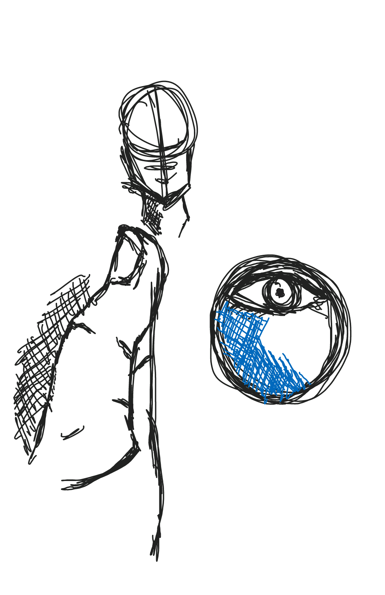

A tone is produced either by the mixture of a color with gray, or by both tinting and shading.
Tone:
Light and dark values used to render a realistic object, or to create an abstract composition.
When making any type of art, it is very important to create a concept other wise known as prototype. Prototypes play a huge role when in doing absolutely anything. This can help practically anyone in the long run, when drawing a figure, building, animal, you name it, you need to make sure you always have a back sketch or an original you can go back to see what you based or added on.

(Created by our member John)
The most important tools that you well need mostly for art are:
College Ruled Notebook: Some use it for a quick prototype idea or even jot down some good or maybe horrible ideas.
Art pencils(Why wouldn't you need them?): Art pencils are used in varites of ways such as if your using HB or a 2H pencil and you want to make it a fade bit darker it's better recommended to use a 2B or 4B pencil.
Pens(0.5 or lower are highly recommended): Some people like using pens no matter the color depending on their signature style. The reason why pens under 0.5 are recommended is because the size of the ball point, hence the number 0.5.
Blending Stumps: For shading draw some tight scribbles in a small corner of a scrap piece of paper and work the graphite onto the paper stump. If needed, remove excess graphite by rubbing it in a clean area of the paper before using it on your drawing. Use light strokes to layer the graphite onto your portrait.